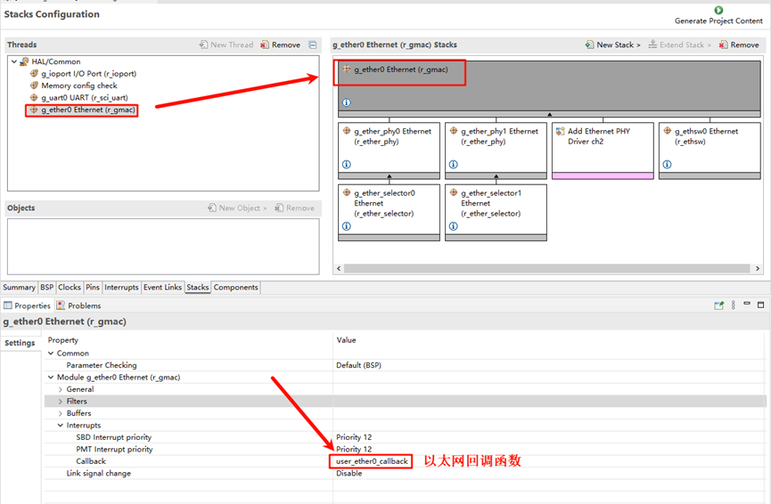

Ethernet Driver Usage Instructions
English | 中文
Introduction
This project provides basic Ethernet functionalities, including ping, tftp, ntp, and iperf.
Hardware Connection
To use Ethernet, connect the development board to any one of the three network ports using an Ethernet cable, and the other end should be connected to a network switch that has internet access.
FSP Configuration Instructions
Open the project configuration file configuration.xml and add the r_gamc stack:

Next, click on g_ether0 Ethernet, and configure the interrupt callback function to user_ether0_callback:

Now configure the PHY settings. Select g_ether_phy0, set the common configuration to “User Own Target”, change the PHY LSI address to 1 (refer to the schematic for the exact address), and set the PHY initialization callback function to ether_phy_targets_initialize_rtl8211_rgmii(). Also, set the MDIO to GMAC.

Next, configure g_ether_selector0, set the Ethernet mode to “Switch Mode”, set the PHY link to “Default Active-Low”, and choose “RGMII” for the PHY interface mode.

Configure the Ethernet pin parameters and select the operating mode to RGMII:

Finally, configure ETHER_GMAC:

RT-Thread Studio Configuration
Return to the Studio project, and configure RT-Thread Settings. Click on “Hardware”, find the chip device driver, and enable Ethernet:

Ethernet IP Experiment Results
After flashing the code to the development board, open the serial terminal to view the logs: